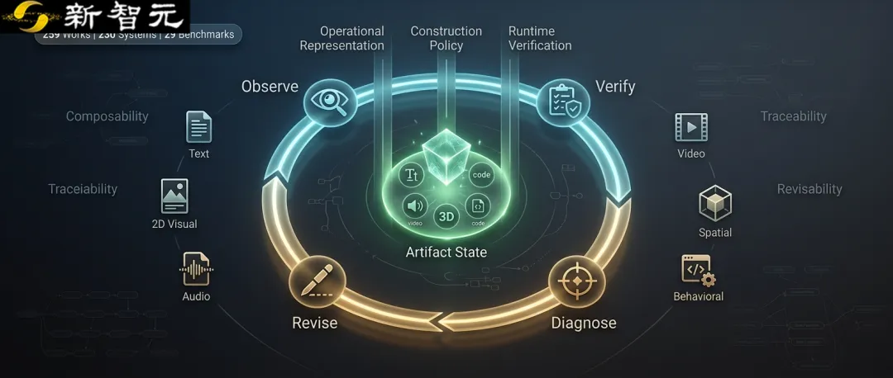
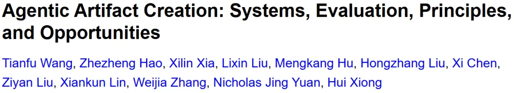
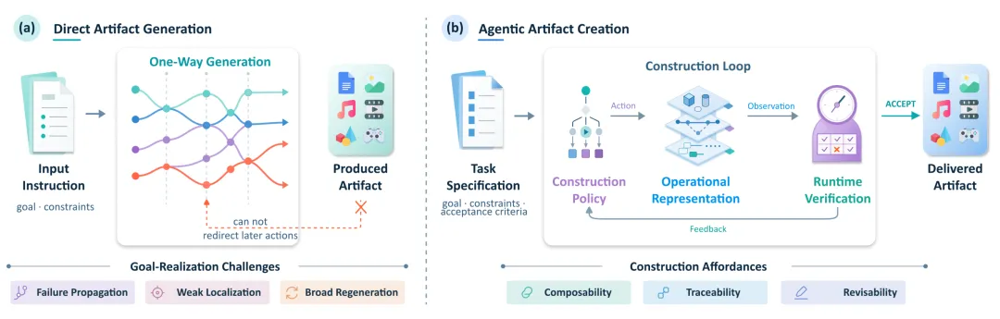
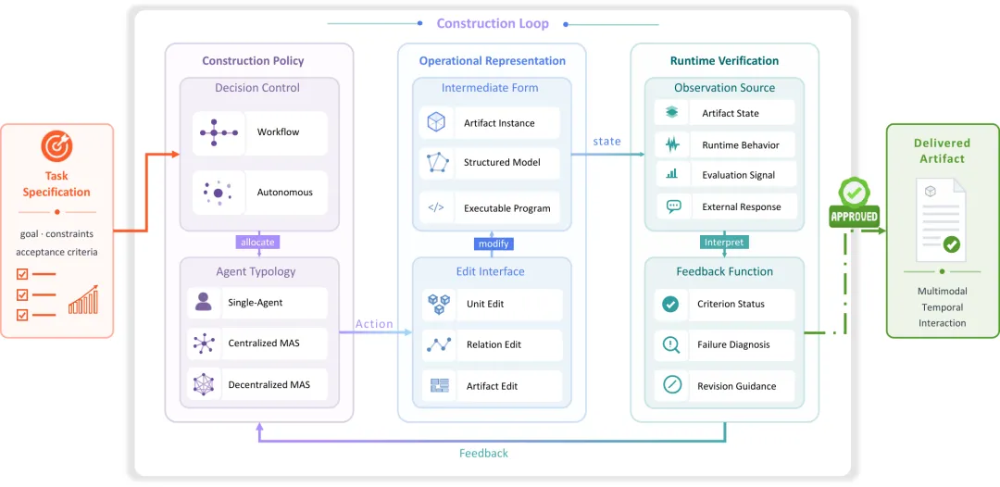
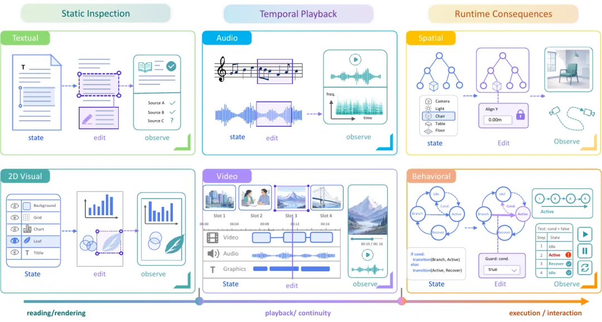
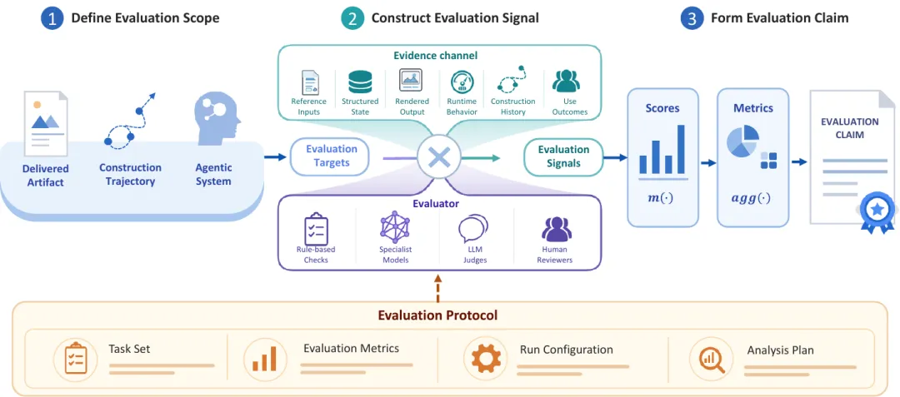
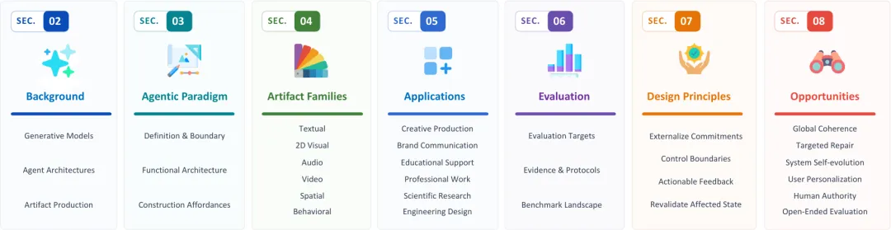
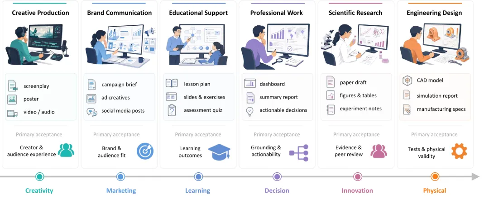

新智元报道
新智元报道

长文、网页、视频和代码经常停在这样的「半成品」状态：海报文案没有写错，却挤出了页面；网站首屏很漂亮，按钮点下去毫无反应；视频里的镜头单看都成立，连起来却丢了人物和节奏；程序刚修好一个模块，另一处又出现回归。
完整作品里的要求彼此牵连，问题又常常要到渲染、播放或运行后才暴露。修复过程需要定位问题、局部修改，并检查改动是否影响其他部分；整体重做会连带改掉已经完成的内容
来自香港科技大学（广州）、浙江大学、中国科学技术大学、清华大学、香港大学、悉尼大学和中山大学的研究团队，围绕作品的持续构造梳理了截至2026年8月20日的259项工作，其中包括230个系统和29个相关基准。

论文链接：https://arxiv.org/abs/2608.28122
项目主页：https://agentic-creation.github.io/
GitHub项目：https://github.com/GeminiLight/awesome-agentic-artifact-creation

传统生成系统大多沿着一条单向路径工作：接收指令，生成结果，然后结束。任务足够小、结果容易检查时，这种方式很有效。完整交付物则需要系统持续保留和修改作品状态。
一张科研海报的文案、图表和版式要互相配合；软件仓库中的代码、测试和文档要保持一致；长视频中的人物、叙事和时间线也不能各管一段。修改其中一处，旧的检查结果也可能随之失效。文案变长会挤压版面，数据改变会牵动图表和结论，接口调整会让测试与说明文档一起过期。
综述将Agentic Artifact Creation定义为一种持续构造过程：系统维护一个不断变化的可交付物，并根据中间结果决定下一步生成什么、修改哪里，以及何时停止。

图1｜直接生成沿固定路径得到结果；智能体式创作把作品状态、检查结果和后续修改连成一个循环。
论文将构造过程拆成三个功能角色：作品表示、构造策略和运行时验证。

论文图4｜Agentic Artifact Creation的功能架构。构造策略选择动作，作品表示提供可编辑的中间形态，运行时验证把观察转成反馈；满足标准后，系统交付作品。
作品表示（Operational Representation）保存当前作品的状态，也决定系统能改到多细。它可以是一份文档、一张场景图、一段可执行代码，也可以是带有图层、节点和依赖关系的结构化表示。系统若只能看到最终截图，很多问题就难以定位；文本块、页面组件或场景对象等可定位结构可以支持局部修复。
构造策略（Construction Policy）负责决定下一步做什么。它结合任务要求、当前状态和已经获得的反馈，选择继续生成、修改某个位置、调用工具、请求人工判断，或在证据足够时停止。
运行时验证（Runtime Verification）观察刚才的行动带来了什么结果。文本可以核对引用，页面需要渲染和点击，程序要编译和运行测试，音视频则要播放。检查结果会直接进入下一步决策。
三个角色循环配合，一次修复通常经过：
明确完成标准 → 保留可定位的作品状态 → 验证当前结果 → 诊断问题 → 构造策略选择动作 → 执行局部修改 → 重新验证
三个功能角色的配合可能支持三种能力：
组合性（Composability）：作品可以拆成边界清楚的部分，并通过明确的接口衔接。文案、图表和版式可以分别制作，需要时也能替换或调整顺序，组合后再检查是否彼此兼容。
可追溯性（Traceability）：系统记录要求、动作、作品状态和观察结果之间的关系。结果出现问题时，可以追到相关要求、改动和证据，也能说明一次决策是怎样形成的。
可修订性（Revisability）：验证结果能够指向受影响的部分，构造策略据此选择修改范围。修完后，系统重新检查相关依赖，并尽量保留已经通过的内容。
研究团队以最终交付的作品为中心，将现有工作分为六类：文本、二维视觉、音频、视频、空间作品，以及软件、网站、游戏和模拟等行为型作品。

图2｜文本与视觉作品可以直接阅读或渲染；音视频依赖时间播放；空间和行为型作品往往需要运行或交互后才能判断。
文本和二维视觉通常可以静态检查，句子、段落、图层和图形标记也较容易定位。难点是长距离一致性：改动前文的一项事实，可能要求后文的论证、图表和引用一起更新。
音频和视频需要沿时间序列检查。某个片段单独听起来没有问题，放回完整序列后却可能破坏节奏。视频还要同时处理画面、声音、字幕和镜头之间的关系，反馈通常要等到播放或渲染后才会出现。
空间作品要维护几何、语义部件和物理约束。行为型作品是否合格，则取决于代码、应用或模拟在一段交互过程中如何响应。执行路径越长，获得一组有代表性的观察就越贵，也越难把失败追溯到具体状态。
不同作品的构造难度取决于三个变量：决策之间的关联程度、错误何时可见，以及系统能否在保留已有成果的前提下局部修复。
把复杂任务拆成子任务，可以降低单步难度，也会增加协调成本。
一个Agent修改文案，另一个Agent负责页面，第三个Agent检查事实。如果文案变长，页面Agent是否知道版面已经失效？事实核查更新了一个数字，图表和结论是否会同步变化？每个Agent都完成自己的局部任务，最终结果仍可能互相冲突。
多Agent系统的难点在于共享状态、依赖关系和完成标准。拆得越细，协调、冲突处理和重新组装的成本越高。对于短小、容易验证的任务，一个能稳定调用工具的单Agent可能更加合适。
共享的作品表示把各个Agent的分工落到同一个可检查、可修改的交付物上，并维持局部结果之间的一致。
不少生成系统把评估收束为一个总分。总分适合比较结果，却很难指导修复：它通常不说明问题出现在哪里、由什么引起，也没有给出下一步可以执行的修改。
诊断粒度还必须和编辑粒度对得上。检查器发现整体叙事不连贯，系统却只能重写整篇文章；评估器发现视觉层级存在问题，编辑接口却只能重新生成整张图。反馈再准确，也很难变成可执行修复。
论文把评估对象分成三层：
第一层是最终作品：要求是否满足，内容是否一致，放进真实场景后能不能完成预定用途。
第二层是构造轨迹：错误发现得够不够早，修复是否局部，已经通过的部分有没有被保留下来，过程中花了多少时间、模型调用和人工监督。
第三层是Agent系统本身：同一任务重复运行是否稳定，换一个起点会不会失灵，用户能否修改目标并保留控制，系统更新后是否出现回归。

图3｜先说明评估的是最终作品、构造轨迹还是Agent系统，再说明使用了什么证据、由谁判断，以及在怎样的协议下形成结论。
生成器和评价模型来自相近的模型家族时，可能共享知识缺口、审美偏好和判断盲区。增加LLM Judge的数量并不能保证证据彼此独立。
来源对照、结构化状态、渲染结果、运行行为、构造历史和用户结果属于不同的证据渠道；规则检查、专用模型、LLM Judge和人工评审则是不同的评价者。一次具体的评价信号来自证据渠道与评价者的组合。评估报告需要说明每一种信号能支持什么结论，也要保留彼此冲突的结果。
第一，把必须保留的要求写进作品状态。完成标准要和具体页面、段落、镜头、对象或测试建立联系，便于判断一次修改影响了哪些承诺。
第二，划清控制边界。系统的执行能力和决策权限是两回事。创意取舍、事实确认、对外发布和高后果操作需要不同级别的授权，置信度不能代替权限。
第三，让反馈能够导向修改。反馈需要连接证据、诊断和可执行动作；笼统评价或单一总分很难进入构造过程。
第四，修改后重新验证受影响的状态。改动会让旧证据过期。系统需要根据影响范围选择性重查，检查结果也要跟随作品版本更新。
控制会增加表示、验证和协调成本。采用构造循环时，需要确认中间观察能够改善后续决策，修改也能保留已经接受的成果。
全局一致性要求系统在拆分作品后还能重新合上。一个角色设定、设计规范或接口发生变化，影响可能穿过整件作品，系统需要显式维护这些依赖。
精准修复要求系统找到失败来源，只修改受影响的部分。检测到异常、定位原因和完成修复是三种不同能力，不能用一个最终成功率代替。
系统自进化关注跨任务留下来的变化。一次作品修改只改变当前结果；新的策略、工具或记忆需要经过独立验证、版本管理和回滚，才能成为可复用能力。
持续个性化要区分稳定偏好、项目承诺、暂定选择和不确定推断。每条记录需要标明状态、适用范围和版本，并允许用户检查、纠正或撤回。一个项目里的偏好不应自动带到另一个项目。
人类决策权限需要落实到具体行动：谁可以批准，批准发生在什么条件下，系统拿到的是哪一级权限。能力边界和授权边界必须分开。
开放式成果的可靠评估承认一个任务可能有多个好答案。评估协议需要记录哪些标准一开始就固定，哪些偏好在看过中间结果后才出现，以及由谁解释这些变化。

论文思维导图｜从生成模型与Agent架构出发，依次讨论智能体式创作范式、六类作品、应用、评估、四项设计原则与六个未来方向。
语料包括259项工作：230个系统和29个基准。除了六类作品，研究团队还把应用场景与评估方式拆成独立维度，避免把作品类型、应用场景和评估方式混进同一套分类。
其中251项能够归入一个主要作品类别；另有8项是跨多种交付物的应用工作流系统。
259项工作 = 230个系统 + 29个基准(251项进入六类作品视图，另8项为应用工作流系统)

应用场景图｜创意生产、品牌传播、教育支持、专业工作、科学研究与工程设计，对作品提出不同的验收要求。
作品类别回答「最终交付什么」，应用场景则关注「作品用于什么目标、由谁验收」。主要验收依据从创作者与受众体验，逐步延伸到品牌要求、学习结果、决策有效性、科学证据，以及测试和物理有效性。
配套的Awesome项目可按作品类型和应用场景浏览，覆盖代码Agent、自动化设计、科学写作、视频制作、3D场景、游戏与模拟等方向。阅读相关工作时，可以比较系统保存的作品状态、使用的验证证据、错误定位方式和修复后的重验范围。
交付质量取决于要求能否持续满足、修改能否定位到具体位置、失败后能否修复，以及系统能否提供足够的验证证据。
复杂Agent适用于中间观察能够改变后续行动、已经完成的部分可以保留、系统有明确停止与交接条件的任务。迭代次数不能单独证明系统具备这些能力。
评估同时覆盖三层对象：最终作品是否达标，构造轨迹是否有效，Agent系统是否可靠且可控。
参考资料：
https://arxiv.org/abs/2608.28122
编辑：LRST